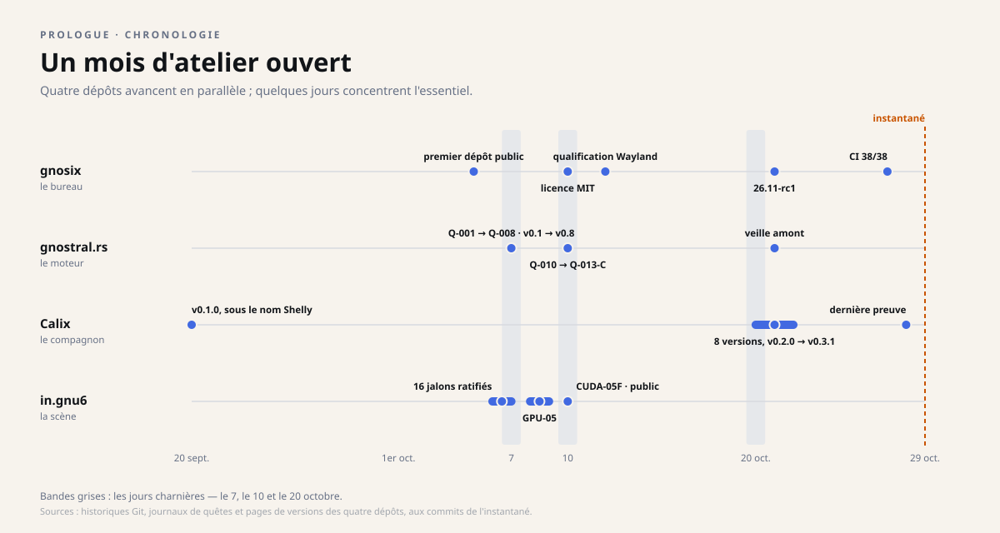

Instantané du 29 octobre 2026. Ce dossier décrit les quatre dépôts tels qu'ils étaient ce jour-là ; les projets ont continué d'avancer depuis, et les dépôts font foi. Les liens soulignés mènent aux sources, figées à leur état de ce jour.
Chronologie
Un mois d'atelier ouvert
Du 20 septembre au 29 octobre 2026, quatre dépôts avancent en parallèle. Certains jours concentrent tout : le 7, le 10, le 20 octobre. Voici le mois, projet par projet, jour par jour.
Le mois sur une frise

Jour par jour
| Date | Dépôt | Ce qui se passe |
|---|---|---|
| 20 septembre | Calix | Première version, v0.1.0, encore sous le nom Shelly. |
| 5 octobre | gnosix | Premier dépôt public, avec un contrat CI dès le départ. |
| 6 octobre | in.gnu6 | Le journal de quêtes est ratifié ; dix jalons le sont dans la journée. |
| 7 octobre | gnostral.rs | Les quêtes Q-001 à Q-008 sont closes ; les versions 0.1 à 0.8 publiées. |
| 7 octobre | in.gnu6 | Six jalons de plus : le mandat, seize jalons, est complet. |
| 8–9 octobre | in.gnu6 | Recherche sur le rendu natif (GPU-05). |
| 9 octobre | gnostral.rs | La piste Q-009, partielle, est datée et gardée telle quelle. |
| 10 octobre | gnosix | Passage de la GPL à la licence MIT. |
| 10 octobre | gnostral.rs | La chaîne de preuve native, de Q-010 à Q-013-C. |
| 10 octobre | in.gnu6 | Protocole CUDA-05F, essai d'endurance de 125 s, dépôt rendu public. |
| 12 octobre | gnosix | Qualification Wayland : clic, deux écrans, glisser-déposer. |
| 20 octobre | Calix | Six versions, de v0.2.0 à v0.2.5 : le nom Calix, les notifications, des correctifs, la marque, la navigation. |
| 21 octobre | gnosix | Première préversion publique, v26.11-rc1 « Ardoise ». |
| 21 octobre | Calix | v0.3.0, la version qui a mesuré l'espace. |
| 21 octobre | gnostral.rs | Une veille de recherche sur les systèmes amont. |
| 22 octobre | Calix | v0.3.1, la version qui tourne sur la machine. |
| 27 octobre | gnosix | Contrat CI à 38/38 après la fusion de la préversion ; profil de bureau par défaut. |
| 28 octobre | Calix | Dernière preuve publiée avant l'instantané : le document des versions n'a qu'un seul écrivain. |
| 29 octobre | prologue | L'instantané de ce dossier : les quatre dépôts, vérifiés et figés à leur état du jour. |